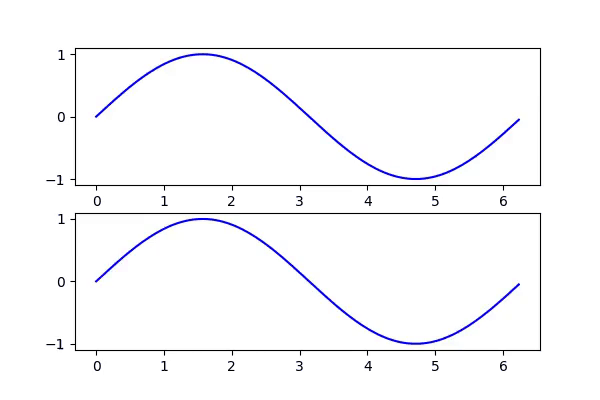
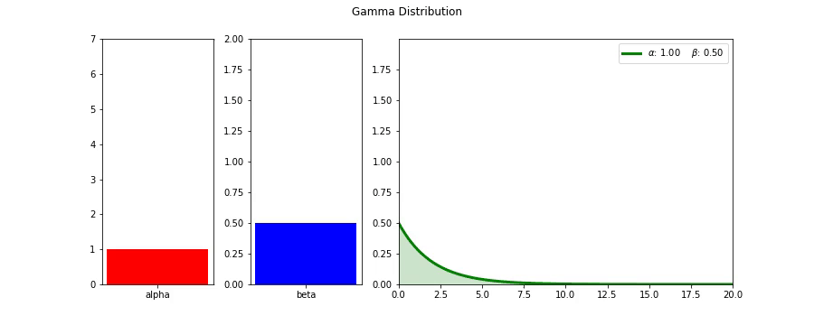
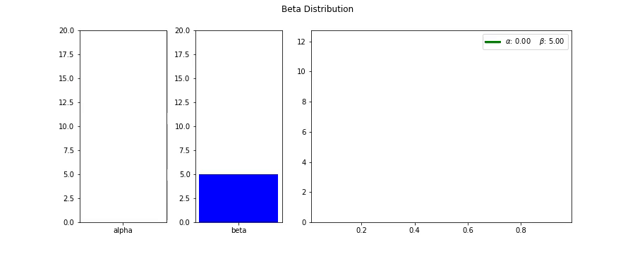
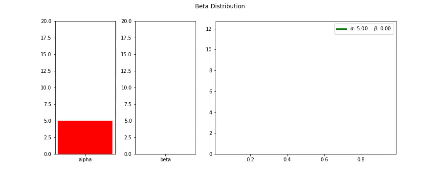

matplotlib 플롯을 GIF로 찍어보자
celluloid
같은 팀에 똑똑한 동료로부터 오늘 신박한 파이썬 라이브러리를 하나 소개받았다. celluloid라는 녀석인데, matplotlib 플롯을 복잡한 애니메이션 함수를 쓰지 않고도 아주 쉽게 mp4 동영상으로 만들어준다.

보통 matplotlib으로 그린 플롯을 애니메이션처럼 움직이게 하려면 matplotlib의 Animation 클래스를 이용해야 하는데 이 방법이 좀 복잡하다 link. 업데이트하는 함수를 하나 만들고 프레임을 for loop을 돌면서 업데이트 함수를 콜하는 방식인데, 요소 요소를 하나씩 그리도록 설정해줘야 하다보니 손이 많이 간다. 나도 이전에 비트코인 가격 추이 분석을 할때 애니메이션 그래프를 그리려다 너무 힘들어서 그냥 이미지를 저장한 다음 외부 툴을 사용해서 동영상으로 만들어버리기도 했다.
그런데 celluloid를 쓰면 이런 번거로움이 아주 쉽게 해결된다. 자세한 사용방법은 Github에 나와있는데, 대문에 걸린 sine파 코드로 간단히 살펴보면..
"""https://github.com/jwkvam/celluloid/blob/master/examples/sines.py"""
"""Sinusoid animation."""
import numpy as np
import matplotlib
matplotlib.use('Agg')
from matplotlib import pyplot as plt
from celluloid import Camera
# 그림 그릴 공간을 확보한다.
fig, axes = plt.subplots(2)
# celluloid에서 Camera 인스턴스를 생성하는데, 이는 생성할 때 matplotlib의 figure를 인자로 받는다. 위에서 만든 fig를 넣어준다.
camera = Camera(fig)
# t가 x축의 값이 된다.
t = np.linspace(0, 2 * np.pi, 128, endpoint=False)
# t array를 순회하면서
for i in t:
# t에 i만큼 더하고 뺀 값을 sin 함수에 통과시킨다음 플롯을 그리고
axes[0].plot(t, np.sin(t + i), color='blue')
axes[1].plot(t, np.sin(t - i), color='blue')
# 이를 카메라로 찍는다.
camera.snap()
# for loop이 종료되고나서 camera 인스턴스의 animate함수를 이용해서 이어붙인다음
animation = camera.animate(interval=50, blit=True)
# .mp4 파일로 저장하면 끝!
animation.save(
'sines.mp4',
dpi=100,
savefig_kwargs={
'frameon': False,
'pad_inches': 'tight'
}
)
그러니까 이젠 포문만 돌면서 플롯을 그리고 snap 사진을 찍은 다음, 마지막에 animate로 이어붙이면 아주 쉽게 동영상으로 만들 수 있게 된다.
moviepy
그런데 아쉽게도 GIF로 저장은 지원하지 않는 모양이다. 그 이유는 celluloid에서 animate 함수를 콜하면 matplotlib.animation.ArtistAnimation 클래스로 인스턴스를 생성해서 리턴하는데, 이녀석이 GIF를 지원하지 않는다.
그래서 찾은 것이 moviepy. 이녀석을 이용하면 celluloid로 만든 mp4를 python으로 쉽게 불러다가 gif로 만들 수 있다. Github
from moviepy.editor import *
# 파일명을 넣어서 쉽게 읽어들일 수 있다.
# speedx 등의 함수를 이용해 속도나 화면 로테이션 등을 쉽게 할 수 있다.
clip = (VideoFileClip("sines.mp4").speedx(2))
# write_gif 함수를 이용해 바로 gif로 만들 수 있다.
clip.write_gif("sines.gif")
Examples
요새 팀 동료들과 베이지언 통계 책을 같이 읽고 있는데, 마침 사전확률분포로 많이 쓰이는 베타분포와 감마분포가 나왔다. 두 분포 모두 $\alpha$ 와 $\beta$ 를 파라미터로 사용하는데, 각 파라미터가 조금씩 달라질때마다 분포의 모양이 어떻게 변화할까? celluloid와 moviepy를 이용하면 아래와 같이 쉽게 만들어볼 수 있다.
"""Gamma 분포에서 \beta는 고정하고 \alpha만 변화시키는 GIF"""
import matplotlib.pyplot as plt
from matplotlib import gridspec
import seaborn as sns
import celluloid
import numpy as np
import scipy.stats as stats
%matplotlib inline
from moviepy.editor import *
# Gamma 함수를 설정하고 alpha와 beta 범위를 잡아 array로 만들어둔다.
gamma = stats.gamma
alphas = np.linspace(1, 7, 100)
betas = np.linspace(0.5, 2, 100)
# Gamma 분포는 양의 실수값을 갖는다. 0.001~20까지로 구간을 한정하자.
x = np.linspace(0.001, 20, 150)
# 그림 그릴 영역을 잡는데, Gamma 분포의 값과 더불어 alpha와 beta값의 추이로 함께 넣어주자. GridSpec을 사용해 3개 영역을 잡는다.
fig, ax = plt.subplots(figsize=(12.5, 5))
gs = gridspec.GridSpec(1, 3, width_ratios=[1, 1, 3])
# celluloid.Camera On!
camera = celluloid.Camera(fig)
# beta를 0.5로 고정시키고
beta = 0.5
# alpha 값들을 순회하면서 그림을 그린다.
for alpha in alphas:
ax0 = plt.subplot(gs[0])
ax1 = plt.subplot(gs[1])
ax2 = plt.subplot(gs[2])
# ax0에는 alpha를 bar 플롯으로.
ax0.bar("alpha", alpha, color='r')
ax0.set_ylim(0, max(alphas))
# ax1에는 beta를 bar 플롯으로.
ax1.bar("beta", beta, color='b')
ax1.set_ylim(0, max(betas))
# x를 Gamma 분포의 확률밀도함수에 넣어 y를 얻는다.
y = gamma.pdf(x, alpha, scale=1./beta)
# 그리고 ax2에다 그린다.
plot = ax2.plot(x, y, lw=3, color='g')
ax2.fill_between(x, 0, y, alpha=0.2, color='g')
# 레전드를 이용해서 바뀐 알파와 베타값을 표시해준다.
plt.legend(plot, ['$\\alpha$: {:.2f} $\\beta$: {:.2f}'.format(alpha, beta)])
plt.autoscale(tight=True)
plt.suptitle("Gamma Distribution")
# 찰칵!
camera.snap()
# for loop이 끝나고 mp4파일을 만든다.
animation = camera.animate()
animation.save("gamma_alpha.mp4")
# 만든 mp4를 불러와서 속도를 2배 빠르게 한다음 gif로 저장한다.
clip = (VideoFileClip("gamma_alpha.mp4").speedx(2))
clip.write_gif("gamma_alpha.gif")
이로서 매우 쉽게 Gamma 분포의 파라미터에 따른 형태 변화를 쉽게 GIF로 내릴 수 있다.
Gamma 분포


Beta 분포


Reference
- celluloid (https://github.com/jwkvam/celluloid)
- moviepy (https://github.com/Zulko/moviepy)
- Probabilistic Programming and Bayesian Methods for Hackers (https://github.com/CamDavidsonPilon/Probabilistic-Programming-and-Bayesian-Methods-for-Hackers)